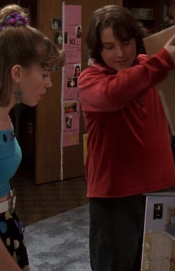
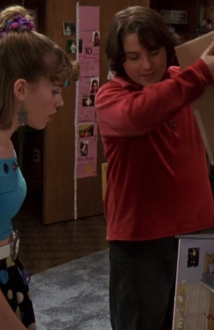

13 Going on 30
Director: Gary Winick
After total humiliation at her thirteenth birthday party, Jenna Rink wants to just hide until she's thirty. Thanks to some magic wishing dust, Jenna's prayer has been answered. With a knockout body, a dream apartment, a fabulous wardrobe, an athlete boyfriend, a dream job, and superstar friends, this can't be a better life. Unfortunately, Jenna realizes that this is not what she wanted. The only one that she needs is her childhood best friend, Matt, a boy that she thought destroyed her party. But when she finds him, he's a grown up, and not the same person that she knew.
 
